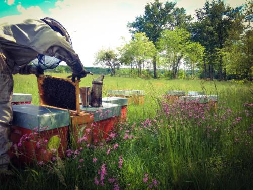

Produits apicoles

Apiculteurs installés à Sillas dans la région de Langon, Nicolas et Guillaume produisent du miel et des produits dérivés des ruches en agriculture biologique.
-
coordinateur.rice :
- Isabelle producteur.rice :
- Borda-Ambrosie
- Type de contrat : contrat variable
- Adresse : La Borda
- Site : http://www.borda-ambrosi.fr
- Commande : https://cagette.gourmandignes.org/contract/view/29
- produits :
Le contrat est d’un an et les livraisons tous les 2 mois.
L’engagement minimum : un pot par livraison. La commande se fait au cours du mois précédent.
- miel